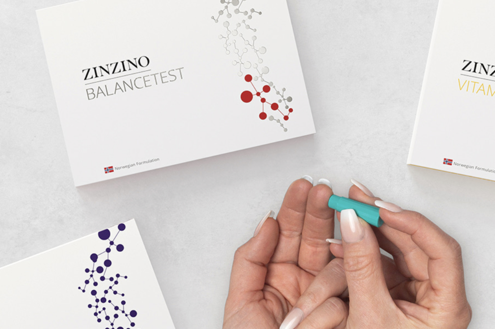
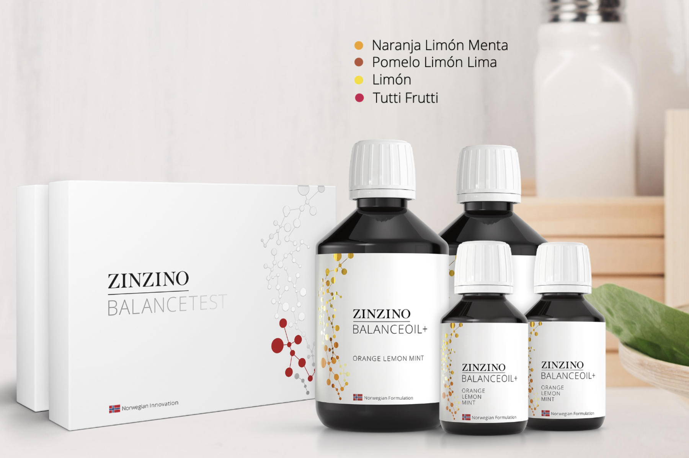
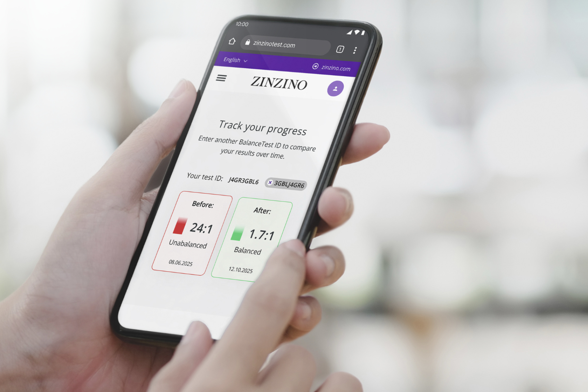

Puede que el problema no sea tu entrenamiento, sino un proceso inflamatorio interno que pasa desapercibido durante años.
-
Entrenar no siempre es suficiente.
Muchos deportistas: - Sienten fatiga persistente. - Tardan más en recuperar. - Sufren lesiones recurrentes. - Su rendimiento se estanca. Y no encuentran una causa clara.
La inflamación silenciosa es un proceso inflamatorio de bajo grado que esta presente durante años sin dar síntomas evidentes.
Se estima que afecta a más del 90% de la población, incluidos deportistas.
En el deporte, puede interferir directamente.
Cuando la inflamación se mantiene en el tiempo, provoca: - Recuperación más lenta. - Cansancio continuo. - Menor rendimiento. - Mayor riesgo de lesión.
El problema no es cómo entrenas, sino cómo responde tu cuerpo internamente.
La inflamación silenciosa no solo afecta al rendimiento deportivo.
Cuando este proceso inflamatorio de bajo grado se mantiene en el tiempo, impacta en aspectos clave de la salud: - Aumento del estrés oxidativo y envejecimiento celular prematuro. - Alteraciones en la sensibilidad a la insulina y el metabolismo. - Mayor carga inflamatoria a nivel articular y muscular. - Impacto negativo en la salud cardiovascular a largo plazo. El problema es que no suele dar un sintoma claro y alarmante, sino que se acumula lentamente, año tras año. Por eso muchas personas se cuidan, entrenan y aún así no se sienten bien del todo.
¿Y si pudieras saber si la inflamación celular
está afectando a tu rendimiento?
No por sensaciones · No por intuición · Sino con datos objetivos.
Los deportistas medimos casi todo.
Pero estamos olvidando lo más importante: nuestro interior.
Pocas veces medimos cómo está respondiendo nuestro cuerpo a nivel celular.
Y ahí es donde está la diferencia entre:
- Progresar o estancarse.
- Recuperarte bien o arrastrar fatiga.
- Entrenar más o entrenar mejor.
La inflamación silenciosa no se ve, pero sí se puede medir.
Lo que no se mide, no se puede mejorar.
EVALÚA
Haz en casa el test inicial de ácidos grasos. Conoce tu estado inflamatorio real.
ACTÚA
Protocolo nutricional de 120 días, el tiempo necesario para generar cambios reales en tus células.
VERIFICA
Comprueba de forma objetiva la evolución, con el segundo test.
DECIDE
Con datos objetivos, no con sensaciones.Ajusta tu estrategia de salud y rendimiento.Avanza con criterio.Cómo funciona nuestro protocolo de salud preventiva.
Quiero conocer mi estado inflamatorio.
Accederás directamente al protocolo de salud completo recomendado por BioTest Solutions, que incluye el test, el protocolo de 120 días y la verificación final.
Lo que no se mide, no se puede mejorar.
- 97% de las personas evaluadas presentan desequilibrios en su perfil de ácidos grasos.
- 95% mejora significativamente con nuestro protocolo personalizado.
- 1,6K test realizados por el laboratorio independiente acreditado (VITAS).
¿Tienes alguna consulta?
Mide el equilibrio entre ácidos grasos proinflamatorios y antiinflamatorios en las membranas celulares, un indicador clave del estado inflamatorio del organismo.
Si el test inicial no muestra desequilibrio inflamatorio, el importe del test es reembolsado por completo.
Porque es el tiempo necesario para que las membranas celulares se renueven y los cambios sean reales y medibles, no solo sensaciones temporales.
No. El objetivo del test es detectar desequilibrios antes de que aparezcan síntomas claros o problemas mayores.
No. Aunque el rendimiento deportivo se ve claramente afectado, la inflamación silenciosa también impacta en la salud metabólica, cardiovascular y el bienestar general.
Las muestras se analizan de forma anónima en un laboratorio independiente especializado (VITAS), y los resultados se presentan de forma clara y cuantificable online.
Si lo necesitas, no dudes en ponerte en contacto con nosotros a través de nuestra cuenta de instagram @biotestsolutions o nuestro correo electrónico biotestsolutions@gmail.com.